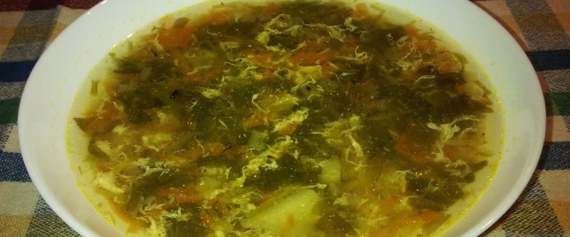

приготовление:
-
Очистить 3 картофелины, нарезать небольшими брусочками и положить в кастрюлю. Залить 2 л воды, поставить на огонь и довести до кипения. Снять образовавшуюся пену и варить 5–7 минут.
-
Очистить 1 морковь и натереть на крупной тёрке. Очистить и мелко нарезать 1 луковицу. Обжаривать овощи на сковороде с небольшим количеством растительного масла около 5 минут, периодически помешивая.
-
Добавить зажарку в кастрюлю, убавить огонь и варить ещё 10 минут.
-
Удалить стебли у 300 г листьев щавеля и произвольно нарезать листья. Разбить в миску 5 яиц и слегка взболтать венчиком или вилкой.
-
Добавить щавель в кастрюлю, аккуратно перемешать и варить 3–4 минуты. Продолжая помешивать суп, тонкой струйкой влить взбитые яйца. Варить ещё 1–2 минуты, пока яйца полностью не приготовятся. Попробовать и при необходимости посолить.
-
Подавать суп горячим или холодным, по желанию добавить сметану.